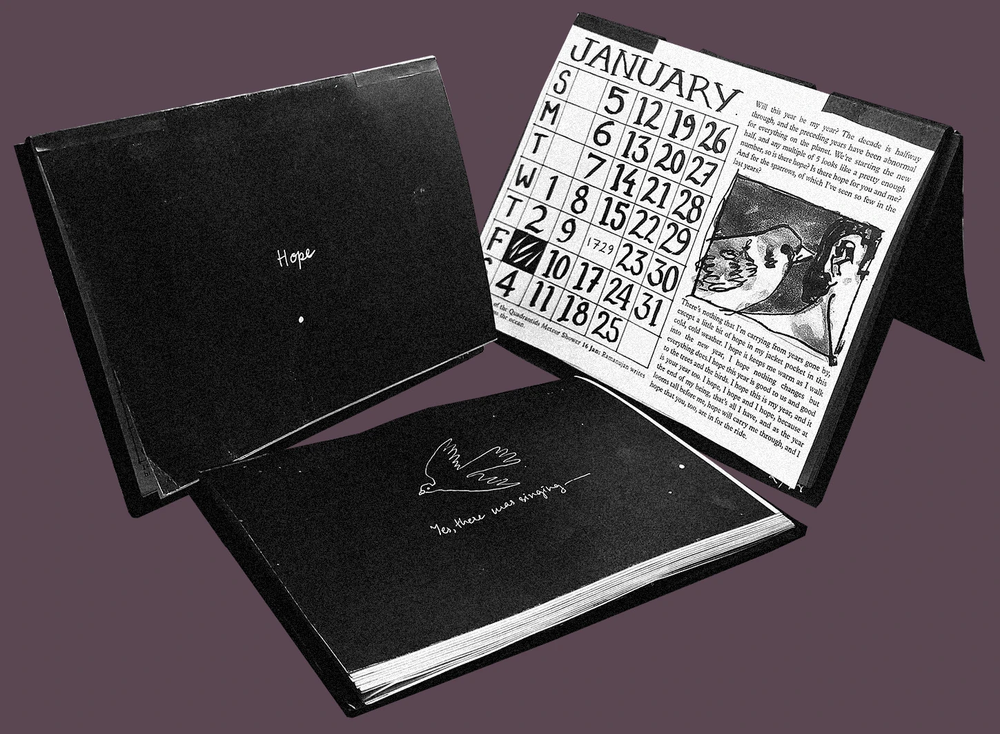
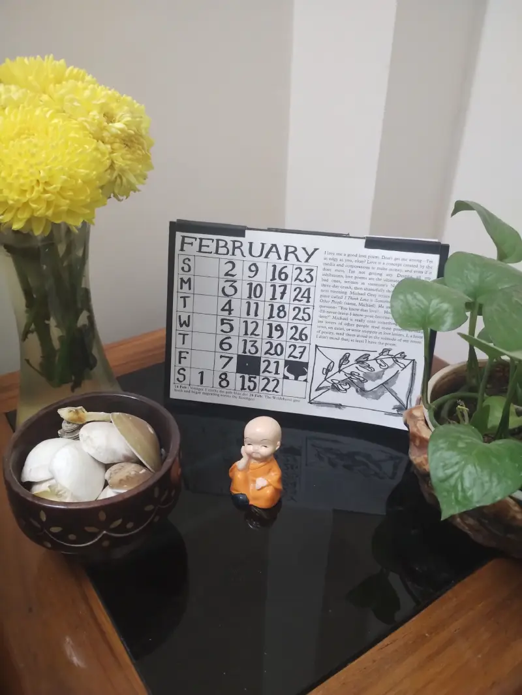
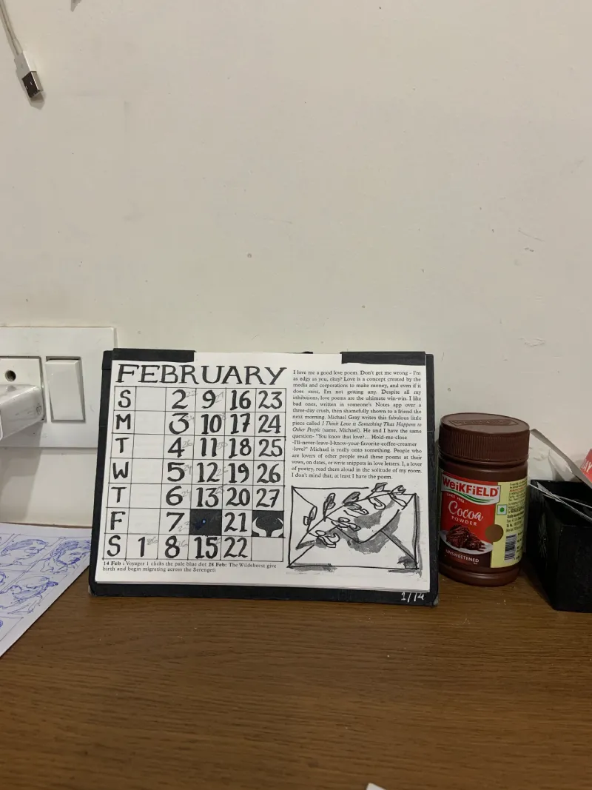
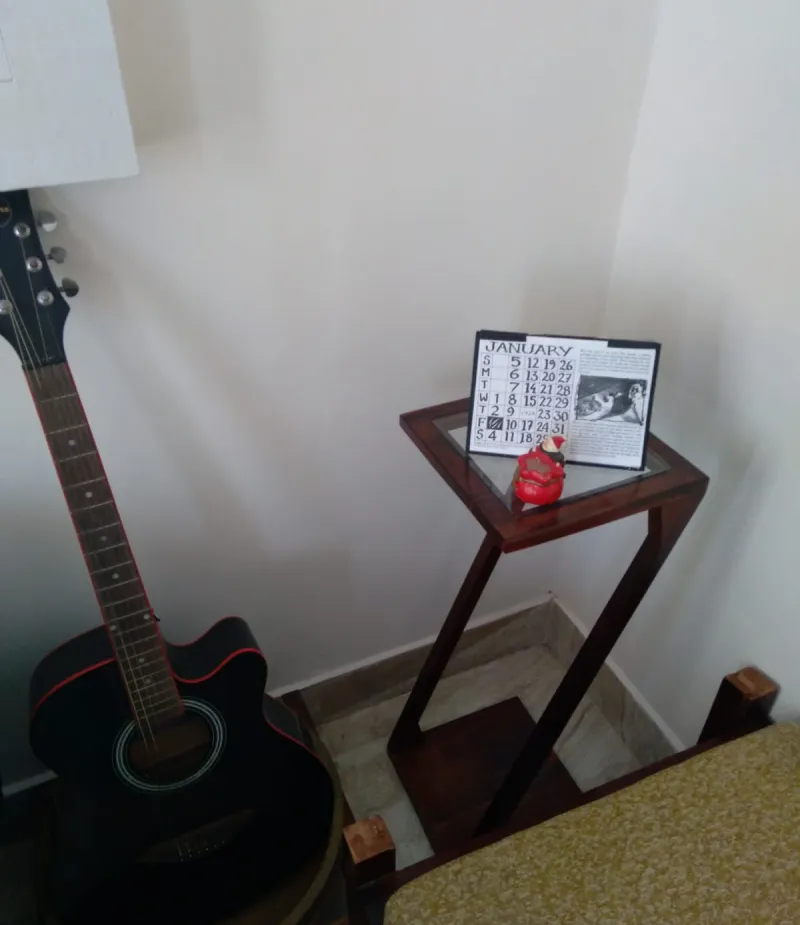
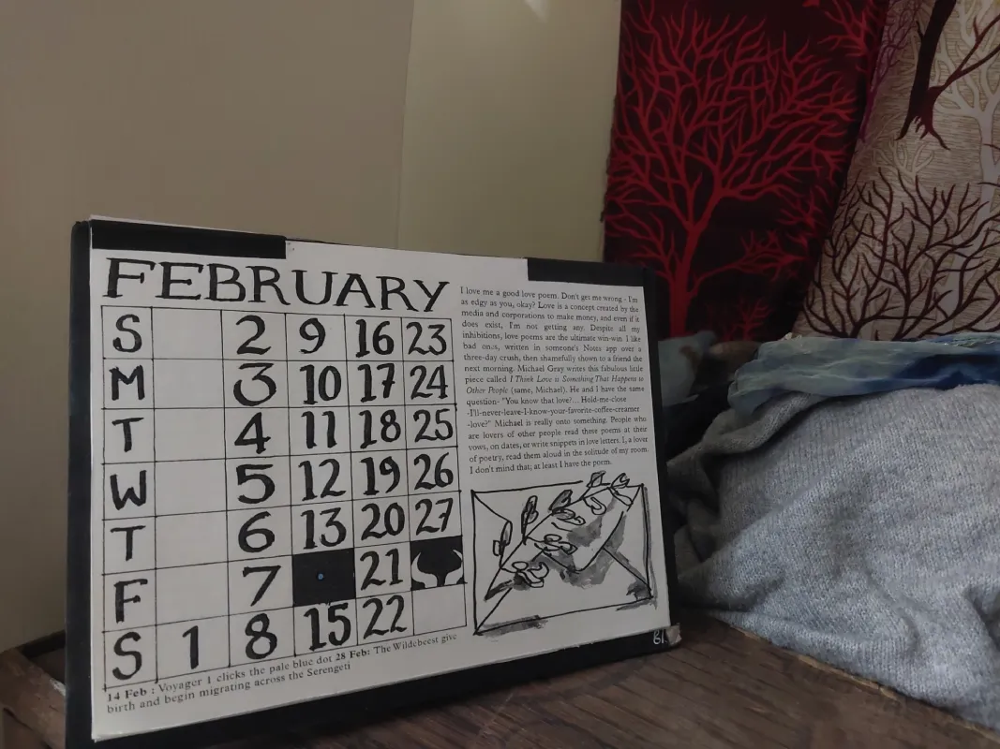
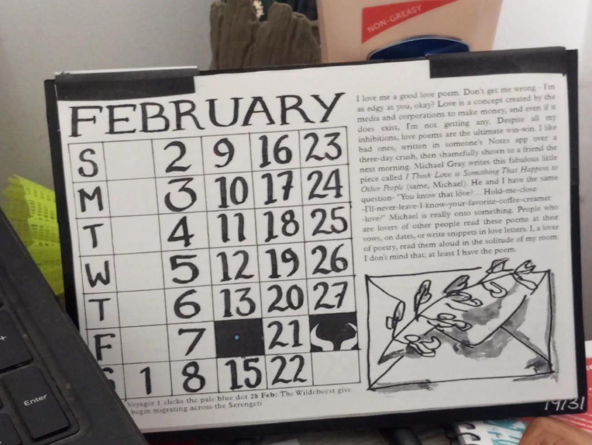
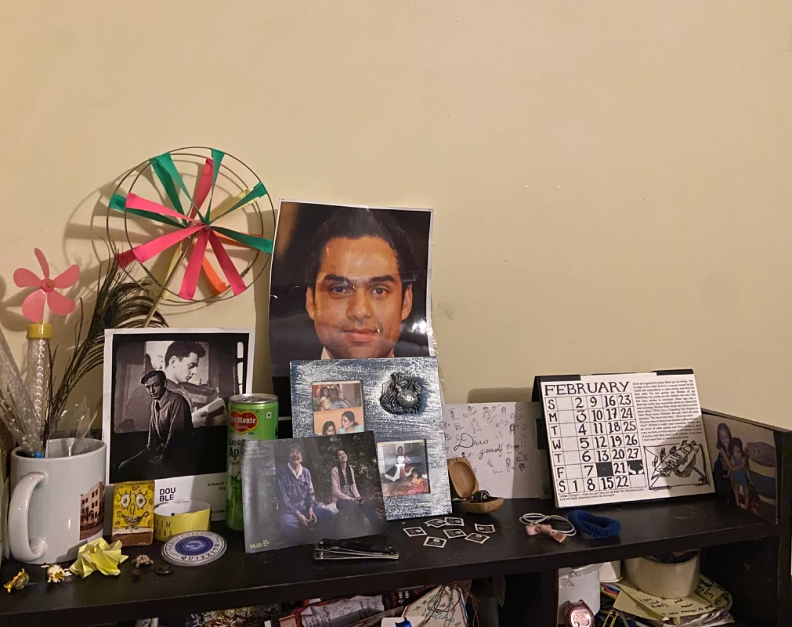
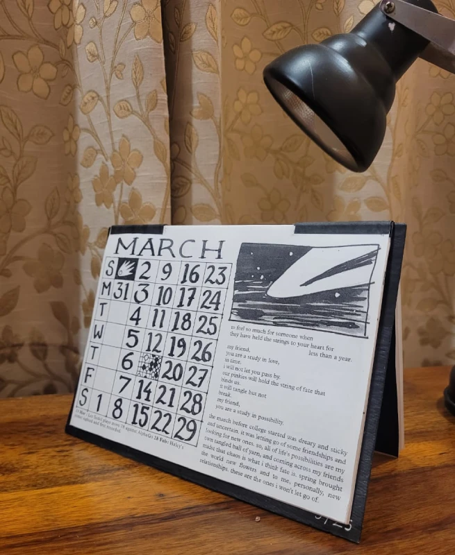
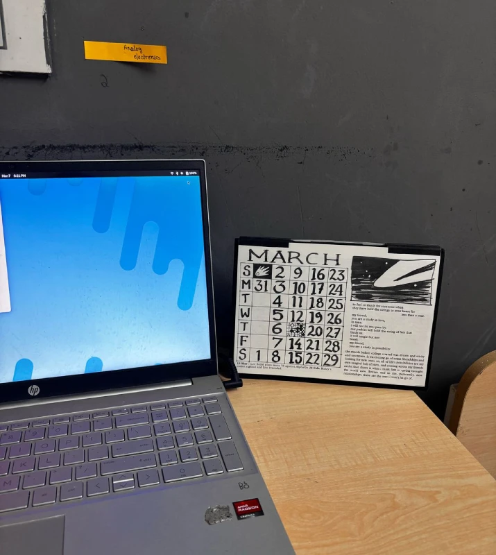
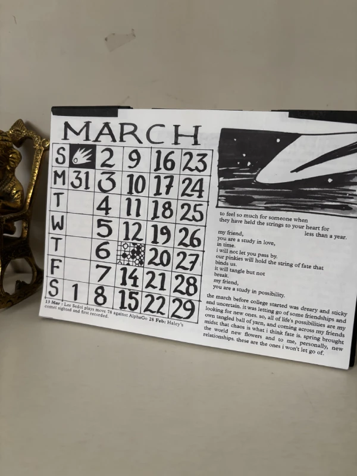

A Calendar Called Hope, 2025

We made a Calendar, we called it hope, and shipped it around the country.
Each month, has a story and an essay, by people to whom the month meant the most.
(Excerpt from January)
There's nothing that I'm carrying from years gone by, except a little bit of hope in my jacket pocket in this cold, cold weather. I hope it keeps me warm as I walk into the new year. I hope nothing changes but everything does.I hope this year is good to us and good to the trees and the birds. I hope this is my year, and it is your year too. I hope, I hope and I hope, because at the end of my being, that' all I have, and as the year looms tall before me, hope will carry me through, and I hope that you, too, are in for the ride.
Hope, Reviews
(click to on image to read review)
















